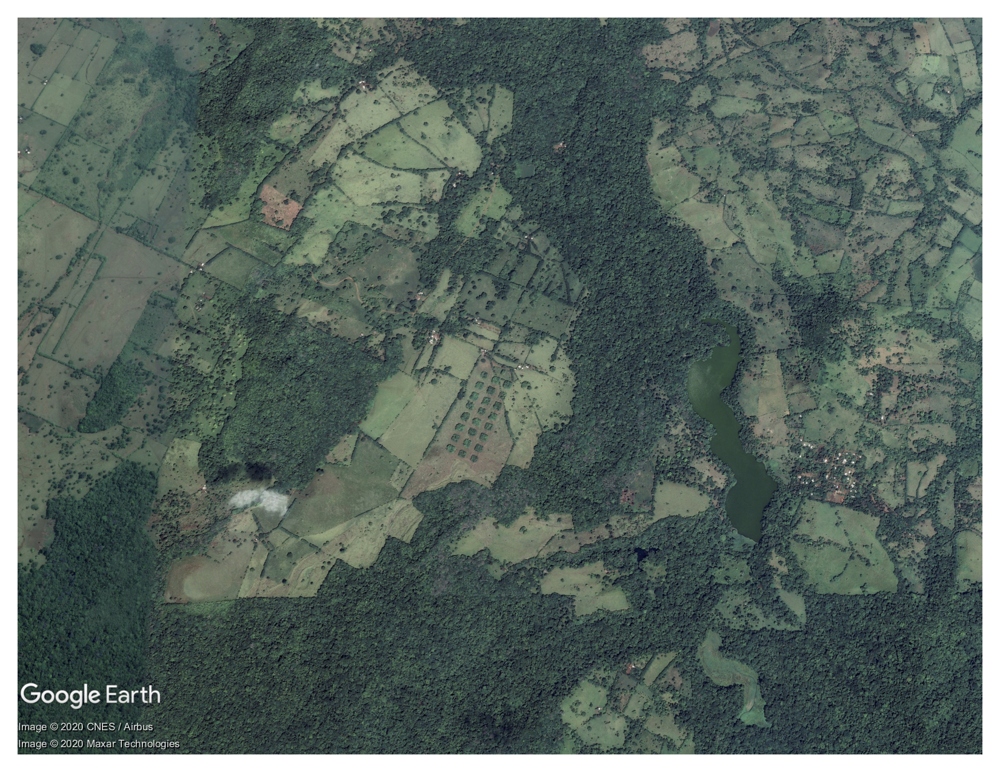
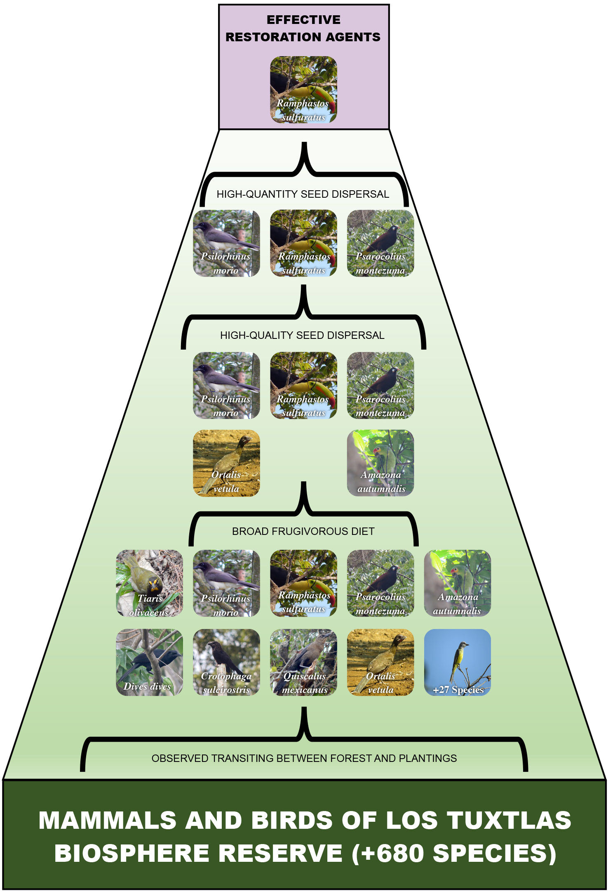
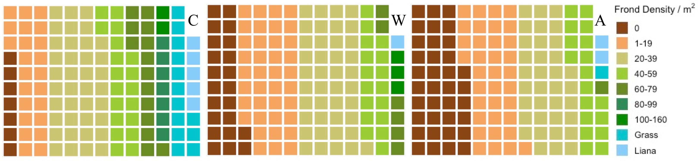
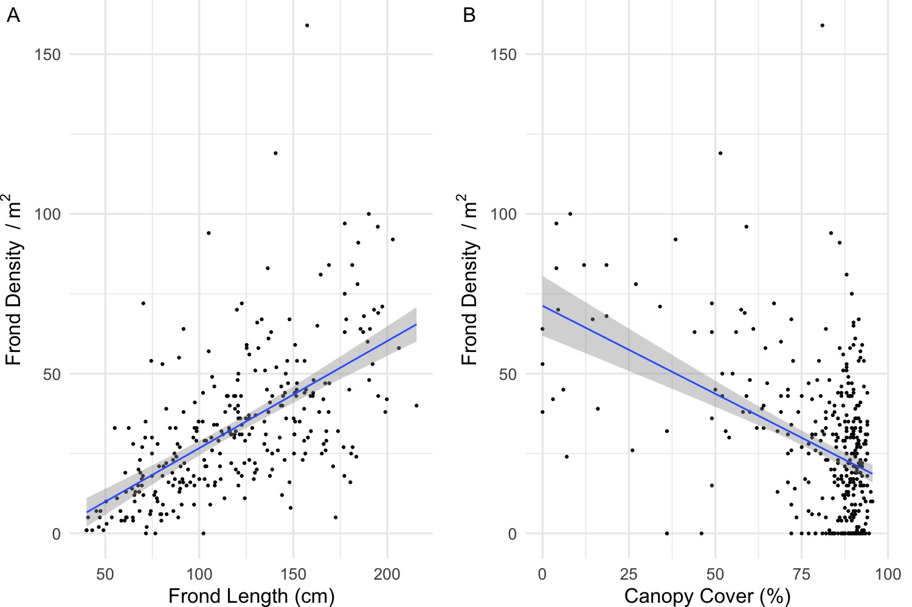
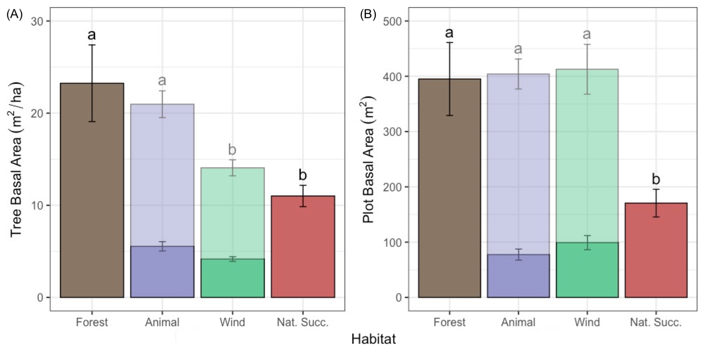

TROPICAL RESTORATION ECOLOGIST
|
My PhD research focused on evaluating how species selection in tropical restoration plantings influenced the development of forest structure and the return of biodiversity. These plantings were established in 2006 by Drs. Henry F. Howe and Cristina Martínez-Garza in Los Tuxtlas, Veracruz, México. The experiment is composed of 24 (30x30m) fenced plots separated by 35 m of actively grazed pasture on a hillside gradient. Plots belong to three treatments: (A) plots planted with animal-dispersed trees, (W) plots planted with wind-dispersed trees, and (C) unplanted plots to simulate natural succession. |

Figure 1. Satellite image of the restoration experiment in Los Tuxtlas, Veracruz, Mexico. |
|
Where tropical forests are fragmented by cattle pasture or other agricultural practices, the characteristics of local dispersal agents can determine whether a particular plant species is able to colonize new forest fragments or not. We characterize as effective restoration agents those species that possess characteristics that maximize their contribution to the development of tropical forests in fragmented landscapes (Figure 2). The characteristics that define them are:
|

Figure 2. Restoration frailty at the Los Tuxtlas restoration plantings (based on bird observations from Howe 2017). Only keel-billed toucans possess the characteristics that allow them to act as effective restoration agents. |
When hunting brings about local extinction of effective
restoration agents or seed dispersal is generally limited,
the behavior and abundance of dispersal agents that are not
crossing over from the forest should be evaluated.
Behavioral sampling will allow restorations to be modified
in a manner that will enhance seed dispersal by unparticipating
dispersers. Increasing the size of the plantings and
minimizing the intervening distance can help,
but these too are not panaceas to dispersal limitation
or simple modifications. Alternatively, supplementing fruit
production by establishing hub tree species (e.g., Cecropia sp.) in the plantings,
or erecting bird perches and/or artificial bat roosts can
substantially increase seed dispersal at disturbed sites can
potentially safeguard the development of restoration plantings.
Read the full perspective piece published in Restoration Ecology
here!
Crucial to the development of restoration plantings surrounded by pasture is fencing to prevent cattle from herbivorizing recruiting seedlings. However, fences will protect plants indiscriminately, including unwanted exotics.
|
Under favorable light conditions, release from herbivory can enable exotic plant species to act as aggressive invaders, altering the structure of the understory and potentially the fate of the restored patches. An understory characterized by such pervasive disruptors of succession is known as a recalcitrant understory layer. In our restoration plantings experiment in Los Tuxtlas, the understory includes an invasive fern species, the Asian swordtail fern (Nephrolepis brownii; Figure 3). |
.jpg)
Figure 3. Quadrat with Asian swordtail ferns (Nephrolepis brownii). |
Has a recalcitrant understory layer formed in our restoration plots?
We sought to evaluate the extent and the effects of this invasion to
determine which factors influenced invasibility.
To do this we randomly established 16 1m2 quadrats per plot and counted the
number of fronds within each quadrat and assessed the recruiting
plant community. We also recorded the presence of grass
or hemiepiphytic lianas in the quadrats as percent cover
where present, measured the length of five
randomly-selected fronds per quadrat, and took measures of canopy cover.
We predicted that frond density and length would be highest
in plots with less canopy cover, which given the experimental
design would follow this pattern: animal < wind < natural succession.

Figure 4. Ground cover of ferns, grasses, or lianas for the 384 1m2 quadrats excluding recruiting and planted forest plants. Each colored square represents a 1 m2 quadrat in the (A) animal-dispersed, (W) wind-dispersed, or (C) unplanted control plots. Grass and liana quadrats were characterized as such when more than 50 % of the ground cover was composed of grasses or lianas.
|
As predicted, we found that the unplanted control plots had higher frond density, longer fronds, and more often had quadrats with grass or liana cover than the wind-plantings (Figure 4). The animal-plantings had lower frond density and shorter fronds than the wind-plantings. Frond density correlated strongly with frond length, indicating that N. brownii indeed behaves as an invasive species, seemingly without any negative effects from conspecific density. We also found that frond density correlated negatively with canopy cover (Figure 5B). Frond density throughout the experiment also correlated negatively with recruiting plant species richness. |

Figure 5. Relationship between frond density with (A) frond length and (B) percent canopy cover. Frond length values represent an average from five randomly selected fronds per quadrat. Band shades represent 95% confidence intervals. |
How do you evaluate restoration success? If the most defining feature of the tropics is its
high species richness, should we simply strive for the highest species count regardless of whether the species are native or not? Or, if we are
restoring an area, lets say to prevent landslides, can we simply select any species for the job and call it a restored site?
Sure, you could if the intention is solving a very
specific problem or simply giving the illusion of solution to a more serious one (e.g., the Colombian military dropping
tree seeds from a Black Hawk helicopter to seem environmentally-friendly).
If your objective is in fact to restore a site
for the purpose of restoring ecosystem services and native habitat,
then this is a different matter that requires
you evaluate your restoration using a reference
ecosystem such as a primary forest.
This reference ecosystem and your restored site can then
be evaluated by three ecological attributes:
species abundance and composition, forest structure, and ecological
functioning. While restored sites may never entirely resemble the
reference ecosystems, approximating its ecological attributes
is more likely to restore its ecosystem services. Even with this framework however,
there are still questions about which species we should select to kick-start a
tropical forest restoration. In our experiment in Los Tuxtlas, we sought to evaluate
how planting animal-dispersed trees over wind-dispersed trees
influences restoration success.
In 2019, I conducted a census where I recorded the circumference, identity, and origin (planted or recruited)
of every woody plant and palm (>2m tall) in the 24 restoration plots and 8 additional plots
established in the forest in June and July 2019 for a total of 7209 trees.
The objective was to compare the four habitats by the ecological attributes of species abundance & composition and forest structure.
The prediction was the animal-plantings would resemble the forest the most, while natural sucession would resemble the forest the least.
|
Species abundance we compared by the abundance and richness of pioneer, non-pioneer, biotically-dispersed, and abiotically-dispersed plants. Species composition was evaluated using ordination techniques (NMDS, PERMANOVA, and clustered dendrogram on Bray-Curtis matrix). Forest structure we compared by tree basal area, plot basal area (Figure 6), and basal area distribution by size class. In addition, to visualize the vertical structure, we used diameter as a proxy for height and calculated the proportion of basal area provided by the 10 most common plant families by height class (Figure 7). |

Figure 6. Basal area by habitat. (A) Tree basal area per hectare and (B) plot basal area (B). Lighter bars over the animal and wind-plantings bars illustrate averages and standard errors that included the planted trees. Different letters above error bars represent statistically significant differences (p < 0.05) for comparisons that included planted trees. Error bars represent standard error values. |
Figure 7. Proportion of basal area provided by the ten most common plant families in each habitat by height rank. Trees were classified into height rank using diameter values, which correlate strongly with tree height, on a log scale to adjust for differences in max canopy height among habitats.
This study is currently under review by Ecological Applications. We hope to have it published soon along with all its other exciting results and figures -- stay tuned!